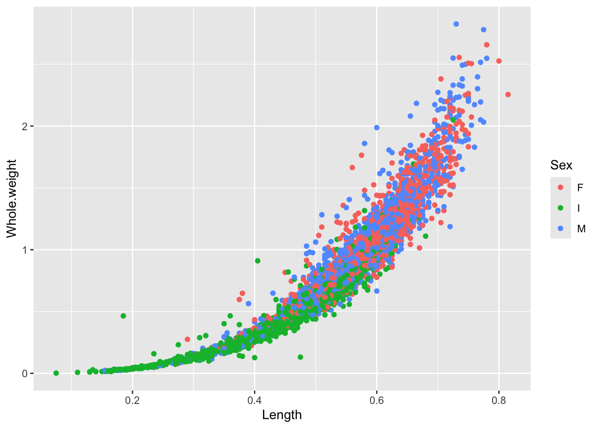
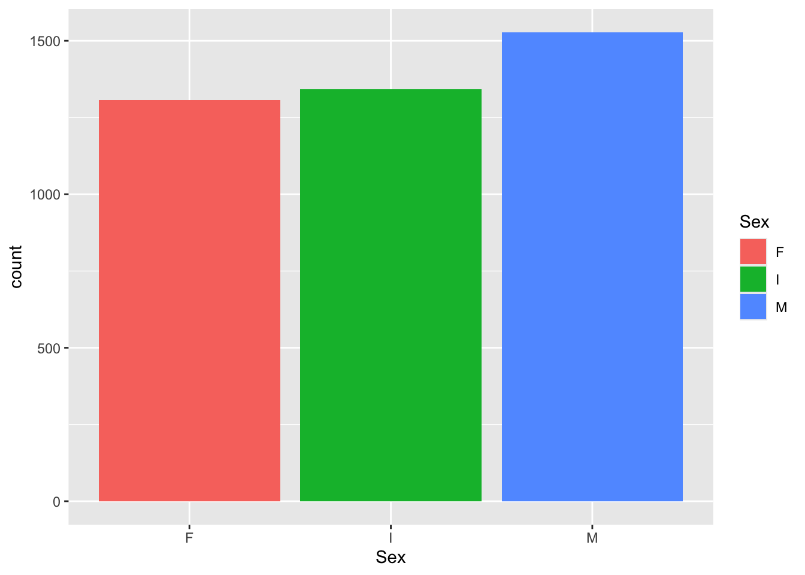

Day 1
Lab
Introduction to R
We will be learning the programming language of R using the RStudio IDE interface.
R studio allows for working in many different file types. For this workshop, we will be using R Markdown files. They have a .Rmd file extension. In this current file, you will find two types of areas. This current area is for markdown text. Code will not be executed here and you can use markdown formatting such as bold and italics.
I encourage you to take advantage of this space to take notes throughout the lessons, feel free to add/edit any of the text in this document! Markdown text will not affect how the code is run.
The second area will is call code chucks such as the one immediately below this. Code chunks always start with three ``` followed by the name of the language you are using in the chunk. You can press the green play button in the top right corner within each chunk or the run the cell.
Edit
## [1] 123## [1] 2The put arrow is used to assign value in objects. While a single equal sign can work as well, it is not good coding practice for R and should be saved for specifying parameters within functions (we’ll get back to this)
Some common keyboard shortcuts that may be useful:
cntl/cmd + alt + i - insert a new code cell (or press the green c with a + in the console toolbar) cntl/cmd + enter - run only the line your cursor is on cntl/cmd + shift + enter - run all lines in the cell (or press the green play button)
Feel free to try editing the code above, perhaps by multiply the value of x by 2.
Within code cells, you can also add comments by starting a line with a hashtag # to indicate lines you do not want to run. I will use this often for guidance or instructions, this is another great way to take notes throughout the workshop
Follow the instructions to write your first script!
math can only be done on numerics
# Save the value of 12 to an object called "dozen"
dozen <- 12
#dozen
# Use this object to calculate how many eggs are in 14 dozen eggs
dozen*14## [1] 168General Syntax
Multiple values can be stored into an object using the function c() for combine or concatenate
## [1] 1 3 5 7Functions act on objects and can have additional parameters within the round brackets to specify how the command is carried out
## [1] 4All functions have default parameters that you can access using the help panel (same area as the “Files” and “Plots” panel) or using a ? before the function name
Getting Started with Data
Data can be created de novo from within R or read in from an external object. Either way, there are a few broad categories of data types that you will encounter:
- Vectors - 1 dimensional, for example the string of numbers in our
primeobject - Data frames - 2 dimensional, for example a table with rows of patients and columns for clinical characteristics
- Lists - complex 1 dimensional, can store data of different types within a single object
Vectors can only hold one type of data within a single object
## [1] 1 2 3 4 5## [1] "orange" "apple" "banana" "grapefruit" "starfruit"## [1] FALSE1 dimensional vectors can be used by themselves or used as the foundation for creating data frames
## first5 fruits
## 1 1 orange
## 2 2 apple
## 3 3 banana
## 4 4 grapefruit
## 5 5 starfruit## [1] "data.frame"## [1] "first5" "fruits"## [1] "1" "2" "3" "4" "5"## [1] 5 2Dataframes are the most common way of storing information. One of their major strengths is that you can access piece of information independently. Square brackets [] are used to access data within an object, always in the format of [rows,columns]. If you want to grab a specific row but all the columns of that row, you can leave the column specifier blank - but you always need the comma there regardless.
## [1] 3## NULLImporting Data
Rather than entering you data manually, you are more likely to read in data from an external source such as an output file from a machine or data stored in an excel table. R is pretty flexible with the files that it can accept, but there are differences to how it is read in.
The recommended format is a .csv file. This stands for “comma separated values”. This means columns are separated by commas and rows are separated by hard enters.
In this module, we will be working with an dataset measuring categorical and integral characteristics of abalone gathered in Australia
Source:
Data comes from an original (non-machine-learning) study: Warwick J Nash, Tracy L Sellers, Simon R Talbot, Andrew J Cawthorn and Wes B Ford (1994) “The Population Biology of Abalone (Haliotis species) in Tasmania. I. Blacklip Abalone (H. rubra) from the North Coast and Islands of Bass Strait”, Sea Fisheries Division, Technical Report No. 48 (ISSN 1034-3288) https://archive.ics.uci.edu/ml/datasets/abalone
Data Set Information:
Predicting the age of abalone from physical measurements. The age of abalone is determined by cutting the shell through the cone, staining it, and counting the number of rings through a microscope – a boring and time-consuming task. Other measurements, which are easier to obtain, are used to predict the age. Further information, such as weather patterns and location (hence food availability) may be required to solve the problem.
Attribute Information:
Given is the attribute name, attribute type, the measurement unit and a brief description. The number of rings is the value to predict: either as a continuous value or as a classification problem.
Name / Data Type / Measurement Unit / Description
- Sex / nominal / – / M, F, and I (infant)
- Length / continuous / mm / Longest shell measurement
- Diameter / continuous / mm / perpendicular to length
- Height / continuous / mm / with meat in shell
- Whole weight / continuous / grams / whole abalone
- Shucked weight / continuous / grams / weight of meat
- Viscera weight / continuous / grams / gut weight (after bleeding)
- Shell weight / continuous / grams / after being dried
- Rings / integer / – / +1.5 gives the age in years
As this is a csv file, we will be using the aptly named function “read.csv()” to import the file into R. Make sure your abalone.csv file is in the same directory/folder as your .Rmd file. The first parameter the read.csv() function requires is the path to the file. This will just be the file name since they are both within the same folder.
If the dataset your working with is not in the same folder, you can modify the path to navigate through your directories to locate the file or use the Import Dataset button.
Notice when we open the abalone dataset that the first row holds the column names rather than the first set of observations. We will need to let R know that there is a header in the parameters of the read.csv() function.
#abalone <- read.csv("anotherfolder//abalone.csv", header = TRUE)
#abalone <- read.csv("C:/Users/Frances/Downloads/BioinformaticsWorkshop_INR_June2024-20240611T023701Z-001/BioinformaticsWorkshop_INR_June2024/abalone.csv")
abalone <- read.csv("../INR-2024/datasets/abalone.csv", header = TRUE)
# abalone - commented out since is a big fileIt is almost never useful to print out the whole table because humans are not good at inspecting numbers. Built in summary statistics are helpful for us to get an overview of the data.
## 'data.frame': 4177 obs. of 9 variables:
## $ Sex : chr "M" "M" "F" "M" ...
## $ Length : num 0.455 0.35 0.53 0.44 0.33 0.425 0.53 0.545 0.475 0.55 ...
## $ Diameter : num 0.365 0.265 0.42 0.365 0.255 0.3 0.415 0.425 0.37 0.44 ...
## $ Height : num 0.095 0.09 0.135 0.125 0.08 0.095 0.15 0.125 0.125 0.15 ...
## $ Whole.weight : num 0.514 0.226 0.677 0.516 0.205 ...
## $ Shucked.weight: num 0.2245 0.0995 0.2565 0.2155 0.0895 ...
## $ Viscera.weight: num 0.101 0.0485 0.1415 0.114 0.0395 ...
## $ Shell.weight : num 0.15 0.07 0.21 0.155 0.055 0.12 0.33 0.26 0.165 0.32 ...
## $ Rings : int 15 7 9 10 7 8 20 16 9 19 ...## Sex Length Diameter Height
## Length:4177 Min. :0.075 Min. :0.0550 Min. :0.0000
## Class :character 1st Qu.:0.450 1st Qu.:0.3500 1st Qu.:0.1150
## Mode :character Median :0.545 Median :0.4250 Median :0.1400
## Mean :0.524 Mean :0.4079 Mean :0.1395
## 3rd Qu.:0.615 3rd Qu.:0.4800 3rd Qu.:0.1650
## Max. :0.815 Max. :0.6500 Max. :1.1300
## Whole.weight Shucked.weight Viscera.weight Shell.weight
## Min. :0.0020 Min. :0.0010 Min. :0.0005 Min. :0.0015
## 1st Qu.:0.4415 1st Qu.:0.1860 1st Qu.:0.0935 1st Qu.:0.1300
## Median :0.7995 Median :0.3360 Median :0.1710 Median :0.2340
## Mean :0.8287 Mean :0.3594 Mean :0.1806 Mean :0.2388
## 3rd Qu.:1.1530 3rd Qu.:0.5020 3rd Qu.:0.2530 3rd Qu.:0.3290
## Max. :2.8255 Max. :1.4880 Max. :0.7600 Max. :1.0050
## Rings
## Min. : 1.000
## 1st Qu.: 8.000
## Median : 9.000
## Mean : 9.934
## 3rd Qu.:11.000
## Max. :29.000Notice for the sex of the observations, the summary is returning that there are characters in this column but not much else. Let’s take a look at the data in this column closer
The sting $ operator is used to access a column within a dataframe.
## [1] "M" "M" "F" "M" "I" "I" "F" "F" "M" "F" "F" "M" "M" "F" "F" "M" "I" "F" "M"
## [20] "M"## [1] "character"As a column of character values, the relationship between the observations being recorded as “M”, “F’, or”I” are not being recognized. We will need convert this column to factor.
## [1] M M F M I I
## Levels: F I M## F I M
## 1307 1342 1528Now that we understand factors, let’s overwrite the column in the original dataset. Remember, there is no undo button in programming. Double check your work before you overwrite objects
## Sex Length Diameter Height Whole.weight Shucked.weight Viscera.weight
## 1 M 0.455 0.365 0.095 0.5140 0.2245 0.1010
## 2 M 0.350 0.265 0.090 0.2255 0.0995 0.0485
## 3 F 0.530 0.420 0.135 0.6770 0.2565 0.1415
## 4 M 0.440 0.365 0.125 0.5160 0.2155 0.1140
## 5 I 0.330 0.255 0.080 0.2050 0.0895 0.0395
## 6 I 0.425 0.300 0.095 0.3515 0.1410 0.0775
## Shell.weight Rings
## 1 0.150 15
## 2 0.070 7
## 3 0.210 9
## 4 0.155 10
## 5 0.055 7
## 6 0.120 8Exercise 1 (10 mins)
Explore the abalone dataset.
A. Determine the sex of abalone (col) number 65, 85, and 99 (rows) B. Out of these three abalone, determine which of the three oysters is largest diameter C. Use the “mean()” function to determine the mean abalone diameter overall (not just the three)
Remember: error messages are normal and part of the troubleshooting process. This is R’s way of communicating where to double check - not an indication of your ability to code! You’re doing great!
Take down your green stickies at the start of this activity and put them up when you’re done and ready to re-group!
# Hints to get you started:
# Square brackets are used to access position: object[row,columns]
# The function c() for combine or concatenate is needed when there are multiple inputs
# Numeric values should not be enclosed in quotations, but character values require quotations.
abalone$Diameter[c(65, 85, 99)]## [1] 0.40 0.45 0.37## [1] "Sex" "Length" "Diameter" "Height"
## [5] "Whole.weight" "Shucked.weight" "Viscera.weight" "Shell.weight"
## [9] "Rings"## [1] 0.40 0.45 0.37## [1] 0.40 0.45 0.37## [1] 0.4078813Good job writing your first investigative pieces of code! Woo hoo!
Revising the R Environment
Let’s take a moment to revisit the Rstudio interface and the environment panel.
We’ve worked with a few objects at this point. The environment panel can give us an overview of the objects in the environment and allow us to preview dataframes.
If you would like to remove any objects, perhaps you made two objects that are very close in spelling and want to remove the incorrect object, you can use the function rm() for remove.
Again, this is an irreversible action - double check your work. If you’ve documented your code properly, you can always re-read in the object in case you mistakenly deleted anything you wanted to keep.
The “object not found” error is a common one. In case you get this, you can refer to this environment tab to double check if it exists. Some common reasons this error message is triggered include:
- Typo mistakes (ex. firstDf vs firstDF)
- Empty environment (ex. object need to be created everytime you open the document. If you save and close RStudio, the text in the .Rmd file will be preserved but not the virtual objects in the environment.)
As an overview of our environment, we can also use the sessionInfo() command. This is a good practice to have at the end of your code to document which packages you used and what version they were.
## R version 4.4.2 (2024-10-31)
## Platform: aarch64-apple-darwin20
## Running under: macOS Sequoia 15.6
##
## Matrix products: default
## BLAS: /Library/Frameworks/R.framework/Versions/4.4-arm64/Resources/lib/libRblas.0.dylib
## LAPACK: /Library/Frameworks/R.framework/Versions/4.4-arm64/Resources/lib/libRlapack.dylib; LAPACK version 3.12.0
##
## locale:
## [1] en_US.UTF-8/en_US.UTF-8/en_US.UTF-8/C/en_US.UTF-8/en_US.UTF-8
##
## time zone: America/Toronto
## tzcode source: internal
##
## attached base packages:
## [1] stats graphics grDevices utils datasets methods base
##
## loaded via a namespace (and not attached):
## [1] digest_0.6.37 R6_2.6.1 bookdown_0.43 fastmap_1.2.0
## [5] xfun_0.52 cachem_1.1.0 knitr_1.50 htmltools_0.5.8.1
## [9] rmarkdown_2.29 lifecycle_1.0.4 cli_3.6.5 sass_0.4.10
## [13] jquerylib_0.1.4 compiler_4.4.2 rstudioapi_0.17.1 tools_4.4.2
## [17] evaluate_1.0.4 bslib_0.9.0 yaml_2.3.10 jsonlite_2.0.0
## [21] rlang_1.1.6Notice that we have some base packages active even though we did not explicitly call for them.
Installing Packages from CRAN
Before we move on to a break, let’s revisit functions and packages. Functions are the commands we use to act on objects. As an open source software, anyone can develop new functions and package them into … packages to share with the community! Virtually anything you want to do - so does someone else!
Referring back to my introduction presentation, R includes many pre-installed functions like c() and summary() that we’ve been using. But this is just the tip of the iceberg. We’ll be exploring a package called tidyverse developed to wrangle and reshape data. We will need to install this package only the first time we’re using it, similar to how we need to download a new app to our phones or computers before using it. Every time we want to use it, we still need to open it.
Most general use packages are hosted on the CRAN network. Another package repository you will encounter specifically for biological applications is called Bioconductor (we won’t be using this for now). To download and install a package from CRAN, we will use another aptly named packaged called install.packages()
Since R has not encountered the package before, we will need to use brackets around the name of the package we want to install
## ── Attaching core tidyverse packages ────────── tidyverse 2.0.0 ──
## ✔ dplyr 1.1.4 ✔ readr 2.1.5
## ✔ forcats 1.0.0 ✔ stringr 1.5.1
## ✔ ggplot2 3.5.2 ✔ tibble 3.3.0
## ✔ lubridate 1.9.4 ✔ tidyr 1.3.1
## ✔ purrr 1.0.4
## ── Conflicts ──────────────────────────── tidyverse_conflicts() ──
## ✖ dplyr::filter() masks stats::filter()
## ✖ dplyr::lag() masks stats::lag()
## ℹ Use the conflicted package (<http://conflicted.r-lib.org/>) to force all conflicts to become errorsOnce you have it installed, you can “open” them. You need to activate the library every new session of R.
You will likely see some warning messages – warnings are not error messages. - Error messages mean that R could not do what you asked it to and tries to explain the problem - Warning messages mean that R did what it think you wanted to do but wants to caution you to double check some parameters
In this case, the “Attaching packages” indicates the tidyverse package in opening other accompanying packages as well that it needs to function. “Conflicts” indicate that there are separate packages with functions of the same name and which one takes priority. To access a function from a specific package, you can use the syntax package::function()
Data Wrangling
Most of the raw data we work with starts off as what the computer considers messy. Perhaps there are some observations with incomplete data (columns are missing data) or there are multiple observations stored in each row (imagine a table with countries in the rows and a column for life expectancy in 1990 in one column and life expectancy in 2010 in the adjacent column).
Data wrangling is the process of data cleaning and reshaping the raw data into a more usable form. This can be a lengthy process, and can often not feel as rewarding as generating statistical analysis or beautiful plots. But this is the foundation of your analysis so it is worth the investment! Data wrangling can also be an intimidating task because there is no straight forward formula to follow. How you clean up your data depends on what you’re starting with, what research question you are trying to address, and which packages you’re using in your analysis.
In this section, we are going to get comfortable subseting the data and re-shaping dataframes. We’ll start by reminding ourselves how our dataset looks:
## Sex Length Diameter Height Whole.weight Shucked.weight Viscera.weight
## 1 M 0.455 0.365 0.095 0.5140 0.2245 0.1010
## 2 M 0.350 0.265 0.090 0.2255 0.0995 0.0485
## 3 F 0.530 0.420 0.135 0.6770 0.2565 0.1415
## 4 M 0.440 0.365 0.125 0.5160 0.2155 0.1140
## 5 I 0.330 0.255 0.080 0.2050 0.0895 0.0395
## 6 I 0.425 0.300 0.095 0.3515 0.1410 0.0775
## Shell.weight Rings
## 1 0.150 15
## 2 0.070 7
## 3 0.210 9
## 4 0.155 10
## 5 0.055 7
## 6 0.120 8If we wanted to take a look at the summary statistics independently for infant vs mature, we can create multiple objects by subseting the original one.
Remember for square brackets are indexing an object. For data frames, it is expecting two specifications separated by a comma, which rows followed by which columns.
## Sex Length Diameter Height Whole.weight
## F: 0 Min. :0.0750 Min. :0.0550 Min. :0.000 Min. :0.0020
## I:1342 1st Qu.:0.3600 1st Qu.:0.2700 1st Qu.:0.085 1st Qu.:0.2055
## M: 0 Median :0.4350 Median :0.3350 Median :0.110 Median :0.3840
## Mean :0.4277 Mean :0.3265 Mean :0.108 Mean :0.4314
## 3rd Qu.:0.5100 3rd Qu.:0.3900 3rd Qu.:0.130 3rd Qu.:0.5994
## Max. :0.7250 Max. :0.5500 Max. :0.220 Max. :2.0495
## Shucked.weight Viscera.weight Shell.weight Rings
## Min. :0.0010 Min. :0.00050 Min. :0.00150 Min. : 1.00
## 1st Qu.:0.0900 1st Qu.:0.04250 1st Qu.:0.06413 1st Qu.: 6.00
## Median :0.1698 Median :0.08050 Median :0.11300 Median : 8.00
## Mean :0.1910 Mean :0.09201 Mean :0.12818 Mean : 7.89
## 3rd Qu.:0.2704 3rd Qu.:0.13000 3rd Qu.:0.17850 3rd Qu.: 9.00
## Max. :0.7735 Max. :0.44050 Max. :0.65500 Max. :21.00We can select for multiple values as well.
#abalone_infants <- abalone[abalone$Sex == "I", ]
abalone_mature <- abalone[abalone$Sex == c("F", "M"), ] ## Warning in `==.default`(abalone$Sex, c("F", "M")): longer object length is not
## a multiple of shorter object length## Warning in is.na(e1) | is.na(e2): longer object length is not a multiple of
## shorter object length## Sex Length Diameter Height Whole.weight
## F:659 Min. :0.1550 Min. :0.1150 Min. :0.0150 Min. :0.0230
## I: 0 1st Qu.:0.5150 1st Qu.:0.4000 1st Qu.:0.1350 1st Qu.:0.7127
## M:763 Median :0.5800 Median :0.4600 Median :0.1550 Median :1.0100
## Mean :0.5699 Mean :0.4469 Mean :0.1543 Mean :1.0220
## 3rd Qu.:0.6350 3rd Qu.:0.5000 3rd Qu.:0.1750 3rd Qu.:1.2971
## Max. :0.8150 Max. :0.6500 Max. :0.5150 Max. :2.8255
## Shucked.weight Viscera.weight Shell.weight Rings
## Min. :0.0085 Min. :0.0050 Min. :0.0050 Min. : 3.00
## 1st Qu.:0.2941 1st Qu.:0.1535 1st Qu.:0.2050 1st Qu.: 9.00
## Median :0.4300 Median :0.2150 Median :0.2870 Median :10.00
## Mean :0.4430 Mean :0.2232 Mean :0.2928 Mean :10.88
## 3rd Qu.:0.5725 3rd Qu.:0.2874 3rd Qu.:0.3699 3rd Qu.:12.00
## Max. :1.3485 Max. :0.7600 Max. :0.8970 Max. :29.00Exercise
Create a new object called abalone_small with only abalone with Whole.weight less than 1. Include only the columns Sex, Length, Diameter, and Whole.weight.
You can do this in one line or multiple lines, whichever you are most comfortable with! Take your time and check your work along the way using the summary() function.
## [1] "Sex" "Length" "Diameter" "Height"
## [5] "Whole.weight" "Shucked.weight" "Viscera.weight" "Shell.weight"
## [9] "Rings"abalone_small <- abalone[abalone$`Whole.weight` <1, c(1, 2, 3, 5)]
abalone_small <- abalone[abalone$Whole.weight <1, c("Sex", "Length", "Diameter", "Whole.weight")]
summary(abalone_small)## Sex Length Diameter Whole.weight
## F: 614 Min. :0.0750 Min. :0.055 Min. :0.0020
## I:1293 1st Qu.:0.4000 1st Qu.:0.305 1st Qu.:0.3040
## M: 798 Median :0.4800 Median :0.375 Median :0.5420
## Mean :0.4613 Mean :0.356 Mean :0.5358
## 3rd Qu.:0.5400 3rd Qu.:0.420 3rd Qu.:0.7800
## Max. :0.6350 Max. :0.510 Max. :0.9995Adding New Columns of Data
New columns can also be created if you wanted to add more information to the dataset
##
## mature
## 4177##
## infant mature
## 1342 2835##
## F I M
## infant 0 1342 0
## mature 1307 0 1528Remember that operations can be done on whole columns as well!!
## Sex Length Diameter Height Whole.weight Shucked.weight Viscera.weight
## 1 M 0.455 0.365 0.095 0.5140 0.2245 0.1010
## 2 M 0.350 0.265 0.090 0.2255 0.0995 0.0485
## 3 F 0.530 0.420 0.135 0.6770 0.2565 0.1415
## 4 M 0.440 0.365 0.125 0.5160 0.2155 0.1140
## 5 I 0.330 0.255 0.080 0.2050 0.0895 0.0395
## 6 I 0.425 0.300 0.095 0.3515 0.1410 0.0775
## Shell.weight Rings maturity Percent.weight
## 1 0.150 15 mature 1.496667
## 2 0.070 7 mature 1.421429
## 3 0.210 9 mature 1.221429
## 4 0.155 10 mature 1.390323
## 5 0.055 7 infant 1.627273
## 6 0.120 8 infant 1.175000Tidyverse
Tidyverse is a collection of packages, or an “umbrella-package” the installs tidyr, dplyr, ggplot2, and several other related packages for tidying up your data.
Keep in mind that tidyverse creates their own rules for R and their functions work well with their own functions, but may not translate to work well with other packages build by different developers. For example, the core developer strongly believes that rownames are not useful and all the information should be stored in columns within the table so converting your data frame to their object variation called tibbles will automatically remove rownames without warnings.
Rather than using square brackets to subset columns, we can select the rows that we want
select(abalone, Diameter, Length, Whole.weight) #Tidyverse selecting columns
abalone$Diameter #base R select can also be used to exclude specific columns
Select only works on columns. We can use a similar function to filter for the rows that we want
# Filter indexes rows
filter(abalone, Sex == "I") # abalone[abalone$Sex == "I", ]
summary(filter(abalone, Sex == c("I")))Functions within the tidyverse universe do not require quotations around column names - this is unique to tidyverse packages and does not translate to other applications!
Another unique aspect of tidyverse is that their commands can be chained together using the pipe %>%. This cumbersome chain of characters can be inserted with the shortcut cnt/cmd + shift + M.
Let’s recreate the same object of abalone_small first with intermediate objects
Reminder of the object requirements: - Whole.weight under 1 - Columns Length, Diameter, and Whole.weight
abalone_sub1 <- filter(abalone, Whole.weight < 1)
abalone_sub2 <- select(abalone_sub1, Length, Diameter, Whole.weight)
summary(abalone_sub2)## Length Diameter Whole.weight
## Min. :0.0750 Min. :0.055 Min. :0.0020
## 1st Qu.:0.4000 1st Qu.:0.305 1st Qu.:0.3040
## Median :0.4800 Median :0.375 Median :0.5420
## Mean :0.4613 Mean :0.356 Mean :0.5358
## 3rd Qu.:0.5400 3rd Qu.:0.420 3rd Qu.:0.7800
## Max. :0.6350 Max. :0.510 Max. :0.9995Now we’re going to combine this all together into one call
abalone_sub3 <- abalone %>%
filter(Whole.weight < 1) %>%
select(Length, Diameter, Whole.weight)
head(abalone_sub3)## Length Diameter Whole.weight
## 1 0.455 0.365 0.5140
## 2 0.350 0.265 0.2255
## 3 0.530 0.420 0.6770
## 4 0.440 0.365 0.5160
## 5 0.330 0.255 0.2050
## 6 0.425 0.300 0.3515## Length Diameter Whole.weight
## Min. :0.0750 Min. :0.055 Min. :0.0020
## 1st Qu.:0.4000 1st Qu.:0.305 1st Qu.:0.3040
## Median :0.4800 Median :0.375 Median :0.5420
## Mean :0.4613 Mean :0.356 Mean :0.5358
## 3rd Qu.:0.5400 3rd Qu.:0.420 3rd Qu.:0.7800
## Max. :0.6350 Max. :0.510 Max. :0.9995The functions are the same but since we are piping the results of the previous line to the next command, you do not need to (and should not) specify the object as the first argument in the function.
group_by() and summarize() functions can be used to get summary statistics without the need to create intermediate objects
abalone_sub3 <- abalone %>%
filter(Whole.weight < 1) %>%
select(Length, Diameter, Whole.weight, Sex) %>%
group_by(Sex) %>%
summarize(my_own_function = median(Whole.weight))
abalone_sub3## # A tibble: 3 × 2
## Sex my_own_function
## <fct> <dbl>
## 1 F 0.707
## 2 I 0.370
## 3 M 0.694Exercise
Using the base abalone object and tidyverse functions, investigate whether the mean length of male or females (group_by) are longer of abalone with a Shucked.weight greater than 0.3 AND a Shell.weight less than 0.3 (filtering rows) .
Include a checkpoint in your summarize call to make sure your filter worked.
abalone %>%
filter(Shucked.weight > 0.3, Shell.weight < 0.3) %>%
group_by(Sex) %>%
summarize(mean_Length = mean(Length),
min_Shucked = min(Shucked.weight))## # A tibble: 3 × 3
## Sex mean_Length min_Shucked
## <fct> <dbl> <dbl>
## 1 F 0.569 0.300
## 2 I 0.547 0.300
## 3 M 0.567 0.301Lastly, we can also use mutate() to add a new column of information based on existing data.
## Sex Length Diameter Height Whole.weight Shucked.weight Viscera.weight
## 1 M 0.455 0.365 0.095 0.5140 0.2245 0.1010
## 2 M 0.350 0.265 0.090 0.2255 0.0995 0.0485
## 3 F 0.530 0.420 0.135 0.6770 0.2565 0.1415
## 4 M 0.440 0.365 0.125 0.5160 0.2155 0.1140
## 5 I 0.330 0.255 0.080 0.2050 0.0895 0.0395
## 6 I 0.425 0.300 0.095 0.3515 0.1410 0.0775
## Shell.weight Rings maturity Percent.weight Whole.weight.oz
## 1 0.150 15 mature 1.496667 0.0179900
## 2 0.070 7 mature 1.421429 0.0078925
## 3 0.210 9 mature 1.221429 0.0236950
## 4 0.155 10 mature 1.390323 0.0180600
## 5 0.055 7 infant 1.627273 0.0071750
## 6 0.120 8 infant 1.175000 0.0123025Plotting with Base R
Just like how there are multiple ways of wrangling data (base R functions vs Tidyverse functions), there are also multiple ways of generating plots. We will start with base R plots.
Before we get started, it is always good to take a peek at the data and remind ourselves of what we’re working with
## Sex Length Diameter Height Whole.weight Shucked.weight Viscera.weight
## 1 M 0.455 0.365 0.095 0.5140 0.2245 0.1010
## 2 M 0.350 0.265 0.090 0.2255 0.0995 0.0485
## 3 F 0.530 0.420 0.135 0.6770 0.2565 0.1415
## 4 M 0.440 0.365 0.125 0.5160 0.2155 0.1140
## 5 I 0.330 0.255 0.080 0.2050 0.0895 0.0395
## 6 I 0.425 0.300 0.095 0.3515 0.1410 0.0775
## Shell.weight Rings maturity Percent.weight
## 1 0.150 15 mature 1.496667
## 2 0.070 7 mature 1.421429
## 3 0.210 9 mature 1.221429
## 4 0.155 10 mature 1.390323
## 5 0.055 7 infant 1.627273
## 6 0.120 8 infant 1.175000Remember that the first column of abalone Sex was originally were character values but we wrangled this data into factors to recognize that there are relationships between observations with the same values (ie. all the abalone with a value “M” in the Sex column share the same biological Sex)
Base R plots are great for taking a quick peek at your data

Note
You cannot color on a column of categorical data if it is not a factor because each entry is considered unique, there are no shared characteristics between the observations.
It can be confusing to figure out which color corresponds to which category in base R.
## [1] "factor"## [1] "F" "I" "M"Let’s make a table to specify the color we want each level to be
plot(abalone$Length, abalone$Whole.weight, col=abalone$Sex,
main = "Abalone weight increases with length",
xlab = "Length (mm)",
ylab = "Whole weight (g)")
legend(x="bottomright",
legend = levels(abalone$Sex),
col = 1:3,
pch = 5
)
Base R plots use layers so the base plot() must be created first, before the legend() layer is added on top.
I stands for infant so it makes sense that they would be smaller in weight and length compared to the mature abalone.
Before we move on to the next type of plot, let’s customize it a bit more by cleaning up the axis
Scatterplot with ggplot
ggplot() was created to support customizable and reproducible plots. The way that the ggplot() function accepts the data is much different from the base R plot() function.
The both columns of data must be in the same dataframe and specified in the data parameter. Then, the x and y axis must be specified using the aesthetic aes parameter. The base ggplot() call only holds the data, the geometry or format of the plot must be further specified by a separate call.
While commas , separate the parameters in a function, plus signs + are used to specify different layers of the plot.
This is the basic template for ggplots:
ggplot(data = , mapping = aes(
)) + ()
A single continuous variable can be displayed using a histogram.
## `stat_bin()` using `bins = 30`. Pick better value with
## `binwidth`.
## [1] 4177Two continuous variables can be contrasted using a point or scatter plot.

It is a lot simpler to add color to ggplots

There’s a lot of dots that are piling up on top of each other so we can change the alpha value to modify the transparency. Remember, you can always look up more information about each function using the ? or looking online! No need to memorize everything!

Exercise
Create a plot to investigate the relationship between the shucked weight and the shell weight of ONLY adult abalone (exclude the infant abalones). Color the plot by Sex, do you notice any difference between the two?
abalone_MF <- abalone[abalone$Sex %in% c("M", "F"), ]
ggplot(abalone_MF, aes(x=Shucked.weight, y = Shell.weight, col = Sex)) +
geom_point()
Let’s take a closer look at categorical data. One categorical data can be displayed with a bar plot. This is helpful when we are looking to see if we have equal representation in each of the sample groups.

Bar plots can also be easily modified.
Lastly, boxplots are used to describe the relationship between a continuous and a categorical variable.

This more clearly shows that the weight distribution is comparable between the males and females. However, it would be clearer to have the F and M bars adjacent for comparison.
## [1] "F" "I" "M"abalone$Sex <- factor(abalone$Sex, levels = c("I", "F", "M"))
ggplot(abalone, aes(x = Sex, y = Whole.weight)) +
geom_boxplot() +
theme_classic()
Multi-panel Plots with ggplot
Plots can be saved as objects
p1 <- ggplot(abalone_MF, aes(x=Shucked.weight, y = Shell.weight, col = Sex)) +
geom_point()
p2 <- ggplot(abalone, aes(x = Sex, y = Whole.weight)) +
geom_boxplot() +
theme_classic()
p1 Rather than flipping between separating plots and stitching them together afterwards in a photo editor, we can arrange them into a figure panel all together in R
Rather than flipping between separating plots and stitching them together afterwards in a photo editor, we can arrange them into a figure panel all together in R
##
## Attaching package: 'cowplot'## The following object is masked from 'package:lubridate':
##
## stampLet’s clean this up a bit
 Adding a third plot to play around with the distribution between panels
Adding a third plot to play around with the distribution between panels
We want p1 to be larger by itself in the top row and then p2 and p3 split in the bottom row.
p3 <- ggplot(abalone, aes(Sex)) + geom_bar()
plot_grid(top_row, p3, ncol=1,
labels = c("", "C"),
label_size = 20)
Day 1 Project
For this mini guided project, we will be working with a dataset quantifying water quality that is publicly available at: https://www.kaggle.com/datasets/adityakadiwal/water-potability?resource=download
Here is some description of the data:
Access to safe drinking-water is essential to health, a basic human right and a component of effective policy for health protection. This is important as a health and development issue at a national, regional and local level. In some regions, it has been shown that investments in water supply and sanitation can yield a net economic benefit, since the reductions in adverse health effects and health care costs outweigh the costs of undertaking the interventions. Content
The water_potability.csv file contains water quality metrics for 3276 different water bodies. More information about each of the columns can be found in the link above
pH value Hardness Solids (Total dissolved solids - TDS) Chloramines Sulfate Conductivity Organic_carbon Trihalomethanes Turbidity Potability
Insert a code chunk underneath each step to carry out the instruction.
Read in the “water_potability.csv” data into an object called data Check the object you created by printing out the first 10 rows and applying the summary function.
Notice that the pH column contains a couple hundred NA values. NA are special values in R (like how “pi” is preset to a value of 3.14159…) to indicate that there is missing data, or it is not available. There are also some NAs in the Sulfate and Trihalomethanes columns.
Create new object called water_df that only contains complete observations.
Tip
Take a look at the function called na.omit(). In most cases, someone’s already done what you’ve wanted to do so there may already be code or functions that you can adapt and use!
- The Potability column has two possible values: 1 means Potable and 0 means Not potable.
It is read in by default as a character vector. Convert this column to a factor.
- WHO has recommended maximum permissible limit of pH in drinking water from 6.5 to 8.5.
Create a new column within the water_df object called ph_category in which:
- Observations with a pH less than 6.5 have a value of
acidicin theph_category - Observations with a pH betwee 6.5 - 8.5 have a value of
permissiblein theph_category - Observations with a pH greater than 8.5 have a value of
basicin theph_category
There are multiple ways to do this, give it a go! You can’t break the object - if you ever feel like you need a reset, you can always repeat step 1 to read in the object again.
Use table() or summary() to check the values in the ph_category column
- Create a plot to double check if the annotations in the
ph_categorycolumn were applied correctly. Make sure to represent both thephandph_categorycolumns.
You’re welcome to use base R or ggplot functions. There are multiple ways of representing these two columns. ggplot is slightly preferred because of its increased customization so it’s good to get some practice with it!
- The levels of sulfates and water hardness cause by salts should be minimized in order to be safe for consumption.
Create a plot with the level of water hardness on the x axis and sulphate on the y axis colored by the Potability column.
Try applying the facet_grid() layer to the plot in order to group the plots by a factor. Make sure to use the ~ before the column name!
Note
The data is quite messy so don’t worry if the results do not separate as much as you would like - real data is messy!
Lab Completed!
Congratulations! You have completed Lab 1!